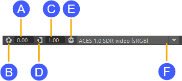

在启用了颜色管理的情况下预览图像时，可以指定要使用的视图。视图是多个有意义的预览之一，例如场景在标准动态范围视频或游戏引擎中的显示效果。某些视图可能仅用于诊断目的。默认情况下，视图变换不会影响最终渲染，其主要用于预览。
您可以使用颜色管理首选项中的“视图”(View)选项为场景设置默认视图。请参见选择用于预览的视图。
您可以使用 Viewport 2.0、“渲染视图”(Render View)和“UV 编辑器”(UV Editor)工具栏上的控件临时使用其他视图，以及调整曝光、Gamma 或完全禁用颜色管理。对工具栏所做的调整是一种临时性改动，不会保存在场景中。

| A. | 调整曝光。单位是摄影 F 制光圈。值为正时增加亮度，值为负时降低亮度。键入一个数值，或按住 Ctrl 键并向左或向右拖动（使用鼠标左键、中键或右键进行小、中或大增量变化）。 |
| B. | 将曝光重置为 0。 再次单击以返回到上一个值。 |
| C. | 调整 Gamma。值介于 0 和 1 之间时减弱中间色调，值大于 1 时增强中间色调。键入一个数值，或按住 Ctrl 键并向左或向右拖动（使用鼠标左键、中键或右键进行小、中或大增量变化）。
请注意，这是在视图顶部应用的额外 Gamma，在正常视图中应保留为 1。 |
| D. | 将 Gamma 重置为 1。 再次单击以返回到上一个值。 |
| E. | 禁用颜色管理以查看原始颜色值。 |
| F. | 选择一个不同的视图。此处会列出当前配置中可用的视图。颜色通过选定的视图变换从渲染空间进行变换，然后转化为适合颜色管理首选项中所设置显示的值（显示在括号中）。如果当前配置为不同的显示指定了不同的视图，则此列表中的选项可能会有所不同。请参见选择用于预览的视图。 |